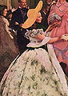

GONE WITH THE WIND
Macmillan Promotional Booklet
GETTING THE DATE
1935
JUNE 26: Kennesaw Mountain National Battlefield Park is created. The bill, which included an initial appropriation of $100,000 was sponsored by Representative Malcolm C. Tarver and Senator Richard B. Russell. [Aisha]
AUGUST 14: Social Security Act passed by Congress. [Greg]
On September 8, Huey Long, the nominal Democratic Senator from Louisiana, was assassinated at the Capitol Building in Baton Rouge by Carl Weiss, the son-in-law of one of his politcal enemies. Long had started the controversial "Share Our Wealth" program with the intent of having the government confiscate the wealth of the nation's rich and privileged, and was so confident that he would be elected President the following year that he wrote a book entitled My First Days In the White House. [Sergio]
SEPTEMBER 15: Nurnberg Laws are passed in Germany. These Laws divest Jews of German citizenship and prohibit marriage between Jews and German citizens. [Katie P.]
Allen Lane's Penguin Press, an English publishing house, reintroduces the paperback book. [Katie F.]
Little House on the Prairie
by Laura Ingalls Wilder is published. [Katie P.]
Parker Brothers introduces the game of
Monopoly
-- it sells 20,000 sets in the first week. [Krista]
Industrial unions that extended membership to all workers regardless of race or sex joined to form the Committe of Industrial Organizations (CIO). In 1936 the AFL suspended the CIO unions. The CIO broke away and renamed themselves the Congress of Industrial Organizations. [Jessica]
To prove facism's military might, Mussolini orders an invasion of Ethiopia. The United States objects but can do nothing because of a series of neutrality acts adopted by Congress. [Jessica]
1936 -- YEAR OF PUBLICATION
John Maynard Keynes makes what is, at the moment, the rather counter-intuitive declaration that economic depressions are unnecessary in "The General Theory of Employment, Interest, and Money." Over one-third of U.S. families have incomes below the poverty level. [Josh].
The San Francisco
News
publishes a series of articles written by John Steinbeck called "The Harvest Gypsies." The series explored the hardships faced by those living and working in migrant labor camps. Steinbeck wrote, "...One has only to go into the squatters' camps where the families live on the ground and have no homes...to look at the strong purposeful faces, often filled with pain...to know that this new race is here to stay and that heed must be taken of it." [Aisha]
Life
magazine begins publishing at 10 cents a copy. [Kerry]
The King of England, Edward VIII, abdicates to marry Wallis Warfield Simpson, an American born divorcee. [Kerry]
The Spanish Civil War is fought. Many Americans volunteer, including novelist Ernest Hemingway. [Eve]
The Union Party is a third political party in the 1930s which wanted to reform the New Deal of President Franklin Delano Roosevelt. [Eve]
FDR is re-elected in a landslide. The electoral vote is 523- 8. [Katie F.]
African American athlete Jesse Owensa, a black sharecropper's son from Alabama, wins four gold medals in track-and-field at the Olympics in Berlin, putting to shame Hitler's Aryan superiority message. [Carla, Pam & Lauren]
The combination of heavy rain and melting snow causes severe flooding in many parts of the United States, namely New England and as far south as the Potomac and James River basins in Virginia. [Kristen]
Standard Oil of California discovered oil under the Saudi desert. The discovery of oil tranformed the Kingdom of Saudi Arabia into one of the richest nations on earth. [Matt]
1937
German airship Hindenburg explodes at Lakehurst New Jersey. [Sean]
Amelia Earhart and her aircraft disappear mysteriously over the Pacific. [Josh].
Ten people are killed and a dozen more are wounded in the "Memorial Day Massacre" at Republic Steel's South Chicago plant. Workers and their families had tried to combine a picnic with a rally and demonstration. [Aisha]
And To Think That I Saw It On Mulberry Street
, Dr. Seuss's first book, is published. [Katie P.]
JUNE 22: Joe Louis knocked out James J. Braddock and became the world heavyweight champ. [Greg]
The workers at the General Motors plant in Flint, Michigan, participate in a sit-down strike. The company finally yields to demands to recognize the United Auto Works unions (UAW). [Jessica]
In December, hundreds of "hunger marchers" seeking minimum wage requirements are turned away from the White House. [Chip]
Disney's "Snow White and the Seven Dwarfs" is released as the first full length animated motion picture. [Pam]
J.D. Rockefeller, the Standard Oil Monopolist, died. [Terry]

IMAGES: FROM THE MOVIE EDITION